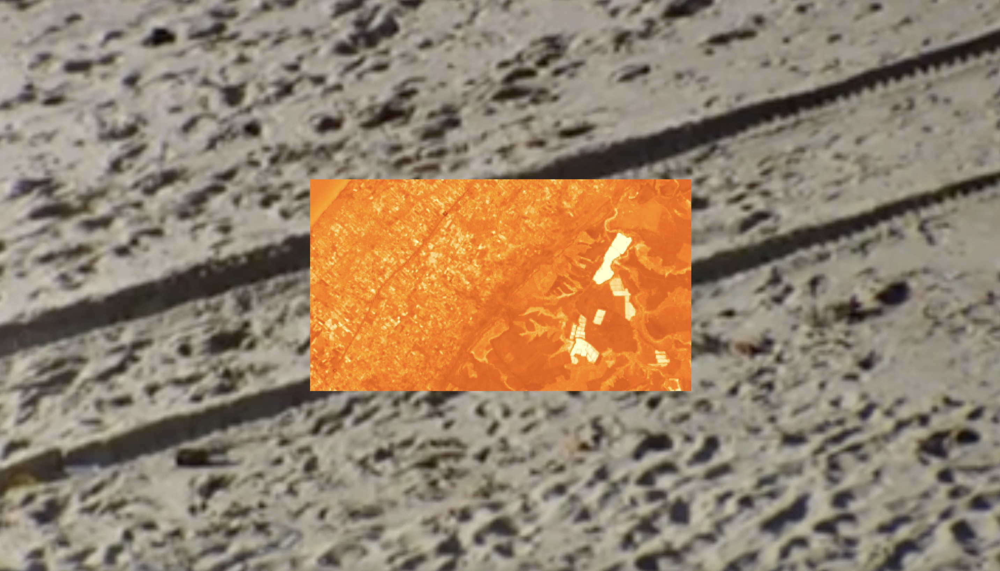
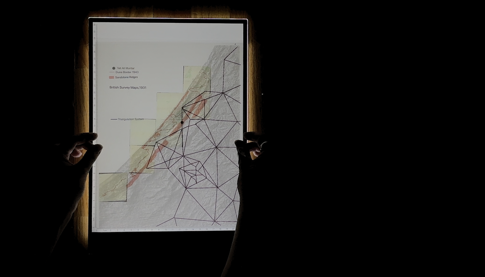
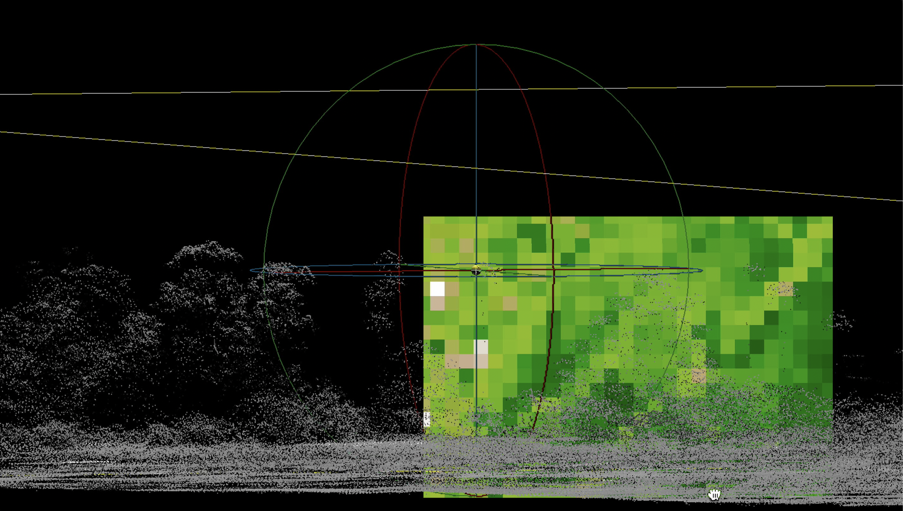
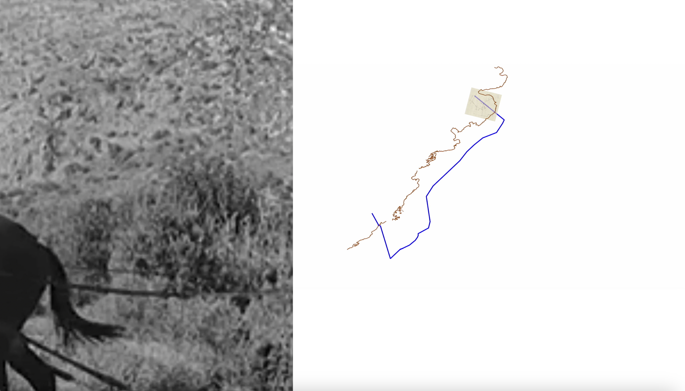

Projecting Topographies: Imaging Sand as a Site of Violence and Resistance in Gaza
“Projecting Topographies: Imaging Sand as a Site of Violence and Resistance in Gaza” maps Gaza’s topography as a site of both military intervention and material resistance, examining the lineage of colonial vision and land intervention across scales and colonial regimes. From afforestation practices implemented during the British Mandate’s Sand Drift Ordinance to Israeli colonization of the dunes between 1970 and 2005, sand is implicated in colonial taxonomies of “dead” land and mechanisms of expropriation despite Palestinian practices of dune cultivation and collective ownership. Simultaneously, sand resists these mechanisms in both representation and materiality, defying cartographic imperatives of fixity and colonial toxicity.
This work engages archival research, cartography, satellite image processing, analogue film, and desktop recordings to examine these modes of resistance and violence across scales. It renders visible the materiality of these processes through methods of collage and image treatment.
A version of this piece was accepted and performed at Spectres of the Undercommons: (In)humanities in the Wake of the Catastrophe at The American University of Cairo, organized by Extraterritorial Studio.



